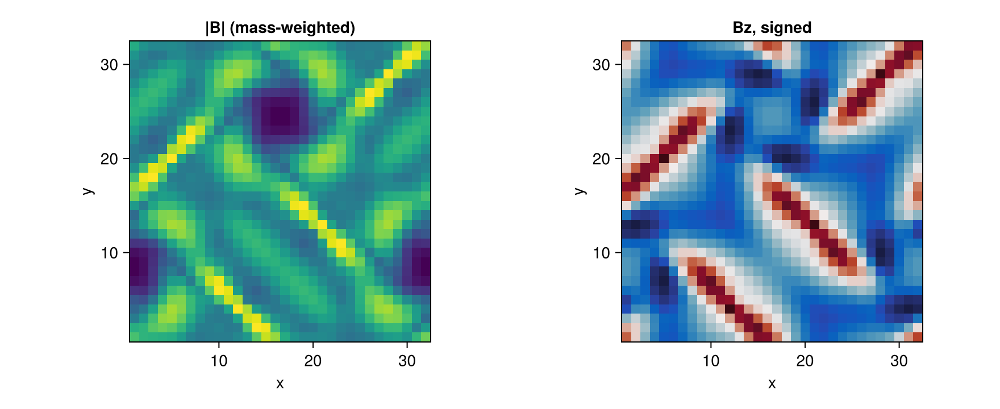
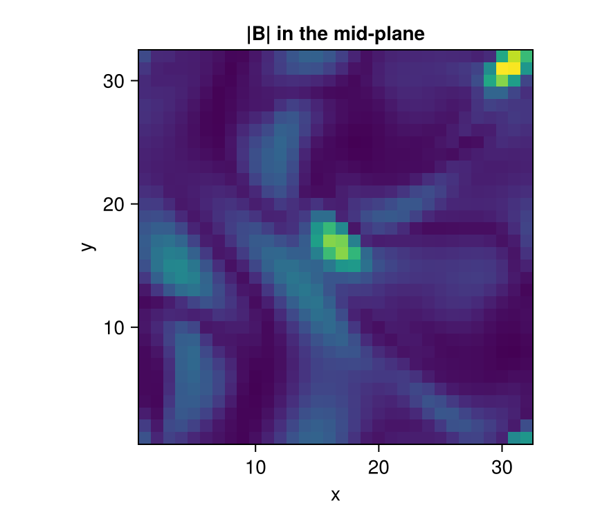
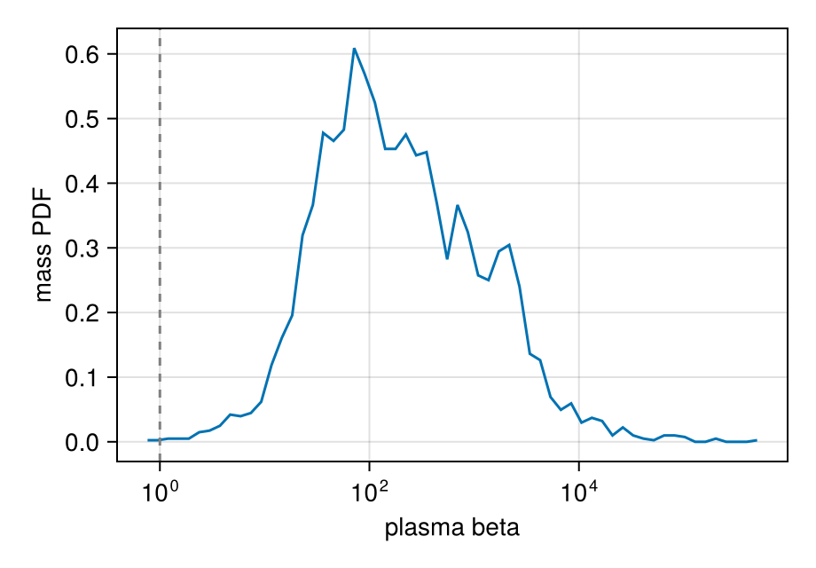
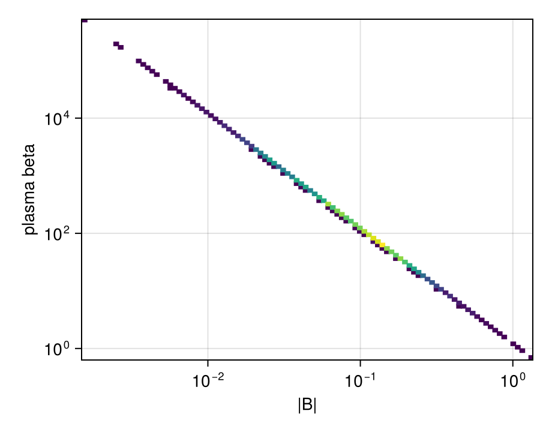
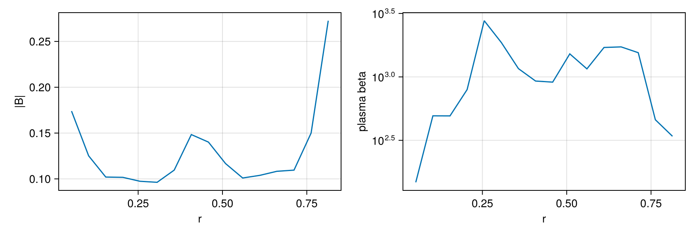

Magnetic Fields (MHD)
This page is also an executable Jupyter notebook: open / download magnetic_fields.ipynb. The notebooks run end-to-end and double as part of Mera's test suite.
Mera reads RAMSES MHD (ideal magnetohydrodynamics) outputs and exposes the magnetic field for analysis. RAMSES evolves B with a constrained-transport scheme, so the field is stored as the six face-centred components B_{x,y,z}_left and B_{x,y,z}_right in the ordinary hydro files (there are no separate magnetic-field files). The physically meaningful cell-centred field is the average of the two opposing faces,
\[B_i = \tfrac12\,(B_{i,\text{left}} + B_{i,\text{right}}), \qquad i\in\{x,y,z\}.\]
How Mera detects and names MHD variables
In an MHD hydro file the variable order is
density, vx, vy, vz, B_x_left, B_y_left, B_z_left, B_x_right, B_y_right, B_z_right, [non-thermal], pressure, [scalars…]so the thermal pressure sits at index 11, not 5 (index 5 is B_x_left). Mera handles this automatically across RAMSES versions:
- With a
hydro_file_descriptor.txt(post-2019 and 2025 outputs) Mera reads the variable names directly and maps them to its canonical symbols (density→:rho,velocity_*→:vx/:vy/:vz,pressure→:pat its true index,B_*_{left,right}→:b*_{left,right}). - Without a descriptor (older outputs) Mera uses the community heuristic (matching
yt): a 3-D run withnvar ≥ 11is treated as MHD (the constrained-transport module adds the threeB_rightcomponents). A short@infoline is printed when this heuristic is applied.
Either way you get canonical names and the cell-centred field :bx, :by, :bz.
Without a descriptor, a hydro run that happens to carry exactly six passive scalars also has nvar = 11 and would be read as MHD. Modern RAMSES writes the descriptor, which removes the ambiguity; if you hit this, the columns are still available positionally (:var6…).
Reading and the derived quantities are in place and tested against RAMSES's own reference solutions. Higher-level MHD tooling is still being added, so if something you need is missing, say so on the issue tracker.
The example data
Two public test simulations are used here. Both are fetched with download_testdata, so every cell on this page runs on data you can get.
| what it is | why it is here | |
|---|---|---|
ramses_abc_flow | a 3-D MHD dynamo, 32³ cells | the working example: real field structure in all three directions |
ramses_mhd_128 | a 1-D shock tube, 128³ | a known answer, used once to check the reader |
Everything below the first section uses the 3-D run. Analysis on a real simulation looks the same: only the path changes.
# Example-data root. Point this at your own simulation folder, or set the
# MERA_EXAMPLES environment variable; every path below is built from it.
MERA_EXAMPLES = get(ENV, "MERA_EXAMPLES", "/Volumes/FASTStorage/Simulations/Mera-Tests");
using Mera
info = getinfo(2, "$MERA_EXAMPLES/RAMSES-PUBLIC/ramses_abc_flow");*__ __ _______ ______ _______
| |_| | | _ | | _ |
| | ___| | || | |_| |
| | |___| |_||_| |
| | ___| __ | |
| ||_|| | |___| | | | _ |
|_| |_|_______|___| |_|__| |__|
Mera v1.8.0 | Julia 1.12.7 | 4 threads
[Mera]: 2026-09-14T15:13:42.228
Code: RAMSES
output [2] summary:
mtime: 2026-08-26T15:14:12.234
ctime: 2026-08-26T15:14:12.234
=======================================================
simulation time: 10.0 [s]
boxlen: 1.0 [cm]
ncpu: 8
ndim: 3
cosmological: false
-------------------------------------------------------
amr: true
level of uniform grid: 5 --> cellsize(s): 312.5 [μm]
-------------------------------------------------------
hydro: true
hydro-variables: 11 --> (:rho, :vx, :vy, :vz, :bx_left, :by_left, :bz_left, :bx_right, :by_right, :bz_right, :p)
hydro-descriptor: (:density, :velocity_x, :velocity_y, :velocity_z, :B_x_left, :B_y_left, :B_z_left, :B_x_right, :B_y_right, :B_z_right, :pressure)
magnetic field: true (MHD, constrained transport) --> cell-centred :bx, :by, :bz = ½(left+right)
γ: 1.6666667
gravity: false
particles: false
rt: false
clumps: false
-------------------------------------------------------
namelist-file: ("&HYDRO_PARAMS", "&INIT_PARAMS", "&RUN_PARAMS", "&AMR_PARAMS", "&OUTPUT_PARAMS", "&REFINE_PARAMS")
-------------------------------------------------------
boundaries: periodic in x, y, z
timer-file: true
compilation-file: true
makefile: true
patchfile: true
=======================================================getinfo prints the MHD note above: it found the six face-centred B components and moved the pressure to index 11. Nothing else is needed to read an MHD run.
The field is an Arnold-Beltrami-Childress flow, a standard dynamo test. The gas has uniform density and nearly uniform pressure, so all the structure is in B, which is what we want on this page.
gas = gethydro(info, verbose=false, show_progress=false);
println("cells : ", length(gas.data))
println("density rho : ", extrema(getvar(gas, :rho)))
println("pressure p : ", extrema(getvar(gas, :p)))
println("Bx : ", extrema(getvar(gas, :bx)))
println("By : ", extrema(getvar(gas, :by)))
println("Bz : ", extrema(getvar(gas, :bz)))cells : 32768
density rho : (1.0, 1.0)
pressure p : (0.659861938296692, 0.6692781818855303)
Bx : (-0.8097685225907696, 0.8097685225907915)
By : (-0.8097685225907656, 0.8097685225907907)
Bz : (-0.19385135316944382, 0.9874378684150922)Derived magnetic quantities
These are built-in getvar quantities, computed from the cell-centred field. No manual arithmetic, and each takes a unit. This run is dimensionless (it sets unit_l = unit_d = unit_t = 1), so the numbers below are code units; on a run with physical scaling the same calls give μG, km/s and erg.
bmag = getvar(gas, :bmag) # |B|
beta = getvar(gas, :beta) # plasma beta = p_thermal / p_magnetic
va = getvar(gas, :v_alfven) # Alfven speed
mA = getvar(gas, :mach_alfven) # Mach numbers are ratios, dimensionless in any unit system
println("|B| : ", extrema(bmag))
println("plasma beta : ", extrema(beta))
println(" spanning : ", round(log10(maximum(beta)/minimum(beta)), digits=1), " decades")
println("Alfven speed : ", extrema(va))
println("Mach_alfven : ", extrema(mA))[Mera] Hint: getvar(:v) has no `vcenter` — velocities are in the BOX frame.
Pass vcenter=:auto for an object with bulk motion (`center=` sets the origin,
`vcenter=` the frame). On a halo streaming at ~200 km/s this shifted |J| by 34 %.
(shown once per session; verbose(false) silences Mera's messages)
|B| : (0.0015395372898541501, 1.401162752947759)
plasma beta : (0.6807865656874684, 562546.4074980728)
spanning : 5.9 decades
Alfven speed : (0.0015395372898541501, 1.401162752947759)
Mach_alfven : (0.0989300985252919, 1346.9642077736057)Plasma beta runs over nearly six decades here, from magnetically dominated (β < 1) to strongly thermally dominated. That range is what makes the plots below worth looking at.
Almost no new units were needed: B reuses the field-strength scales (:Gauss, :muG, :microG, :nG, :Tesla), magnetic pressure/energy-density reuse the pressure scales (:Ba, :g_cm_s2), the Alfvén speed reuses the velocity scales (:km_s, :cm_s), and the magnetic energy reuses :erg. (:nG, nanogauss, was added via a new ScalesType003 so pre-existing mera files still load.)
The exact formulas (incl. the RAMSES code-unit convention P_mag = B²/2 and the Alfvén-speed conversion) are listed in How Quantities Are Computed.
Maps
The cell-centred components project like any other quantity. A map of |B| shows where the field is strong; a map of a single component shows its sign, so it wants a diverging colour scale.
using CairoMakie
p = projection(gas, [:bmag, :bz]; verbose=false, show_progress=false)
fig = Figure(size=(880, 360))
ax1 = Axis(fig[1,1]; title="|B| (mass-weighted)", aspect=DataAspect(), xlabel="x", ylabel="y")
ax2 = Axis(fig[1,2]; title="Bz, signed", aspect=DataAspect(), xlabel="x", ylabel="y")
heatmap!(ax1, p.maps[:bmag]; colormap=:viridis)
heatmap!(ax2, p.maps[:bz]; colormap=:balance)
fig
A projection sums along the line of sight, so it averages away some of the structure. To see a plane of the box instead, restrict the third axis: this is a slice one cell thick.
dz = info.boxlen / 2^info.levelmin # one cell at the coarse level
sl = projection(gas, :bmag; zrange=[0.5 - dz/2, 0.5 + dz/2], center=[:bc],
range_unit=:standard, verbose=false, show_progress=false)
fig = Figure(size=(440, 380))
ax = Axis(fig[1,1]; title="|B| in the mid-plane", aspect=DataAspect(), xlabel="x", ylabel="y")
heatmap!(ax, sl.maps[:bmag]; colormap=:viridis)
fig
Distributions
A PDF answers a question a map cannot: how much of the gas sits at each value. Weight by mass, so the answer is a mass fraction and not a cell count. Here it shows how the volume divides between magnetically and thermally dominated gas, with β = 1 marking the boundary.
pb = pdf(gas, :beta; weight=:mass)
fig = Figure(size=(460, 320))
ax = Axis(fig[1,1]; xlabel="plasma beta", ylabel="mass PDF", xscale=log10)
lines!(ax, pb.centers, pb.pdf)
vlines!(ax, [1.0]; color=:grey, linestyle=:dash) # equipartition
fig
Phase diagrams
phase is the two-dimensional version: a weighted histogram of one quantity against another. On a production run this is the classic density-temperature diagram. Here, with density uniform, the informative pair is field strength against plasma beta, and the two are tightly related because the pressure hardly varies.
# log-spaced bins, so both axes can be shown on a log scale
ph = phase(gas, :bmag, :beta; weight=:mass, xscale=:log, yscale=:log)
fig = Figure(size=(460, 360))
ax = Axis(fig[1,1]; xlabel="|B|", ylabel="plasma beta", xscale=log10, yscale=log10)
heatmap!(ax, ph.xedges[1:end-1], ph.yedges[1:end-1], replace(ph.H, 0.0 => NaN); colormap=:viridis)
fig
Profiles
profile bins any quantity against any other. A radial profile about the box centre shows how the field strength is organised with distance. Weight by :volume, because we are averaging cells and this run has uniform density anyway.
pr = profile(gas, :r_sphere, [:bmag, :beta]; center=[:bc], nbins=16, weight=:volume)
fig = Figure(size=(880, 300))
for (n, (q, lab)) in enumerate(((:bmag, "|B|"), (:beta, "plasma beta")))
ax = Axis(fig[1, n]; xlabel="r", ylabel=lab, yscale = q === :beta ? log10 : identity)
lines!(ax, pr.x, pr.fields[q].mean)
end
fig
Each field carries more than the mean: std, min, max, median, quantiles and the effective count per bin come back in the same pass, so a spread band costs nothing extra.
m, s = pr.fields[:bmag].mean, pr.fields[:bmag].std
println("bins : ", length(m))
println("cells in the first : ", Int(round(pr.count[1])))
println("spread/mean, bin 1 : ", round(s[1]/m[1], digits=3))bins : 16
cells in the first : 56
spread/mean, bin 1 : 0.438Selecting part of the box
A region behaves the same on MHD data as on any other. Because the selection carries a per-cell fraction for the cells the boundary cuts, a magnetic energy summed over a sphere is the energy inside the sphere, not the energy of every cell the sphere touches.
# CairoMakie also exports a `Sphere`, so qualify Mera's region type once the
# plotting package is loaded. `Mera.Sphere` is unambiguous either way.
region = Mera.Sphere(0.3; center=[:bc], range_unit=:standard)
sph = subregion(gas, region, verbose=false)
println("cells in the sphere : ", length(sph.data))
println("magnetic energy : ", round(sum(getvar(sph, :e_magnetic)), sigdigits=6))
println(" counting whole cells: ",
round(sum(getvar(subregion(gas, region, split=false, verbose=false), :e_magnetic)),
sigdigits=6))cells in the sphere : 4632
magnetic energy : 0.000906972
counting whole cells: 0.000891642Checking the reader against a known answer
The 3-D run above shows what the tools do. This last section does something different: it checks that the reader is right, using a problem whose answer is known in advance.
ramses_mhd_128 is a 1-D MHD shock tube along x, extruded in y and z. Nothing varies across the tube, so $\nabla\cdot\mathbf B = 0$ reduces to $\partial B_x/\partial x = 0$: Bx has to be constant everywhere, to machine precision. RAMSES stores the field on cell faces, and Mera averages opposing faces to get the cell-centred value. If that averaging were wrong, a constant would not come back constant, so this is a real test and it costs nothing to run.
The third line checks the other half of the setup, that nothing varies across the tube. Note the center=[:bc]: getvar(:x) measures from the box corner unless you give it an origin, so without it the selection would be empty and the test would pass by accident.
using Statistics
tube = gethydro(getinfo(27, "$MERA_EXAMPLES/RAMSES/ramses_mhd_128", verbose=false),
verbose=false, show_progress=false)
bx = getvar(tube, :bx)
println("Bx constant (div B = 0 in 1-D) : ", all(bx .== first(bx)))
println("Bz identically zero : ", all(iszero, getvar(tube, :bz)))
xc = getvar(tube, :x, center=[:bc])
println("nothing varies across the tube : ",
std(getvar(tube, :rho)[xc .< -0.9]) < 1e-12)[ Info: Mera: no hydro descriptor and nvarh=11 (≥11) on a 3D run — assuming a RAMSES MHD layout (B faces at 5–10, pressure at 11). If this is hydro with ≥6 passive scalars instead, the names are positional (:var6…).
Bx constant (div B = 0 in 1-D) : true
Bz identically zero : true
nothing varies across the tube : trueThree true values. The same check is part of the test suite, run against RAMSES's own published reference solution for this problem, so it is not only checked here.
On an MHD run the first-look dashboard does this for you: quicklook(output) adds a face-on |B| panel and reports the |B| and plasma-β ranges automatically.
Caveats
- Mera reads ideal-MHD RAMSES outputs (the constrained-transport
Bfaces). Non-ideal terms (e.g. resistivity) are not separate fields. :bx/:by/:bzare the cell-centred average of the faces; the raw faces remain available as:bx_left,:bx_right, … if you need the divergence-free face representation.- On a non-MHD run,
:bx/:by/:bz, the derived quantities (:bmag,:pmag,:beta,:v_alfven,:e_magnetic) and the magnetosonic Mach numbers all error with a clear message. - The face-centred components stay available as
:bx_left,:bx_rightand so on, if you need the divergence-free face representation rather than the cell-centred average.